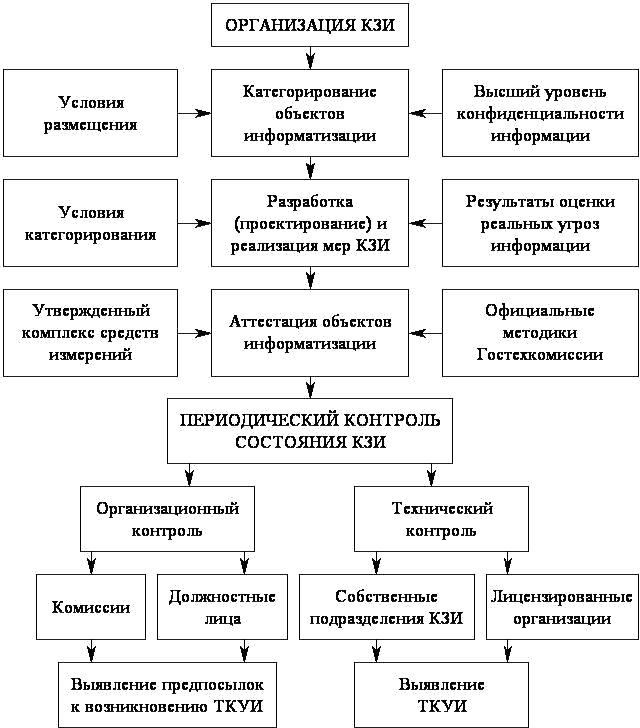

Лабораторная работа 11.
Изучение методов построения комплексной системы организационных и технических мер по защите информации
Цель работы: изучить методы построения КСЗИ организационных и технических мер по защите информации.
Теоретическая часть
Под информационной безопасностью понимается защищенность информации и поддерживающей ее инфраструктуры от любых случайных или злонамеренных воздействий, результатом которых может явиться нанесение ущерба самой информации, ее владельцам или поддерживающей инфраструктуре.
Существует множество причин и мотивов, по которым одни люди хотят шпионить за другими. Имея немного денег и старание, злоумышленники могут организовать ряд каналов утечки сведений, используя собственную изобретательность и (или) халатность владельца информации. Задачи информационной безопасности сводятся к минимизации ущерба, а также к прогнозированию и предотвращению таких воздействий.
Для построения системы надежной защиты информации необходимо выявить все возможные угрозы безопасности, оценить их последствия, определить необходимые меры и средства защиты, оценить их эффективность. Оценка рисков производится квалифицированными специалистами с помощью различных инструментальных средств, а также методов моделирования процессов защиты информации. На основании результатов анализа выявляются наиболее высокие риски, переводящих потенциальную угрозу в разряд реально опасных и, следовательно, требующих принятия дополнительных мер обеспечения безопасности.
Информация может иметь несколько уровней значимости, важности, ценности, что предусматривает соответственно наличие нескольких уровней ее конфиденциальности. Наличие разных уровней доступа к информации предполагает различную степень обеспечения каждого из свойств безопасности информации – конфиденциальность,
целостность и доступность.
Анализ системы защиты информации, моделирование вероятных угроз позволяет определить необходимые меры защиты. При построении системы защиты информации необходимо строго соблюдать пропорцию между стоимостью системы защиты и степенью ценности информации. И только располагая сведениями о рынке открытых отечественных и зарубежных технических средств несанкционированного съема информации, возможно
определить необходимые меры и способы защиты информации. Это одна из самых сложных задач в проектировании системы защиты коммерческих секретов.
При возникновении различных угроз от них приходится защищаться. Для того чтобы оценить вероятные угрозы, следует перечислить и основные категории источников конфиденциальной информации – это могут быть люди, документы, публикации, технические носители, технические средства обеспечения производственной и трудовой деятельности, продукция, промышленные и производственные отходы и т. д. Кроме того, к возможным каналам утечки информации следует отнести совместную деятельность с другими фирмами; участие в переговорах; фиктивные запросы со стороны о возможности работать в фирме на различных должностях; посещения гостей фирмы; знания торговых представителей фирмы о характеристиках изделия; излишнюю рекламу; поставки смежников; консультации специалистов со стороны; публикации в печати и выступления, конференции, симпозиумы и т. д.; разговоры в нерабочих помещениях; правоохранительные органы;
«обиженных» сотрудников предприятия и т. п.
Все возможные способы защиты информации сводятся к нескольким основным методикам:
• Воспрепятствование непосредственному проникновению к источнику информации с помощью инженерных конструкций технических средств охраны;
• скрытие достоверной информации; предоставление ложной информации.
Упрощенно принято выделять две формы восприятия информации – акустическую и зрительную (сигнальную). Акустическая информация в потоках сообщений носит преобладающий характер. Понятие зрительной информации весьма обширно, поэтому ее следует подразделять на объемно- видовую и аналогово-цифровую.
Самыми распространенными способами несанкционированного получения конфиденциальной информации являются:
• прослушивание помещений с помощью технических средств;
• наблюдение (в т. ч. фотографирование и видеосъемка);
• перехват информации с использованием средств радиомониторинга информативных побочных излучений технических средств;
• хищение носителей информации и производственных отходов;
• чтение остаточной информации в запоминающих устройствах системы после выполнения санкционированного запроса, копирование носителей информации;
• несанкционированное использование терминалов зарегистрированных пользователей с помощью хищения паролей;
• внесение изменений, дезинформация, физические и программные методы разрушения (уничтожения) информации.
Современная концепция защиты информации, циркулирующей в помещениях или технических системах коммерческого объекта, требует не периодического, а постоянного контроля в зоне расположения объекта. Защита информации включает в себя целый комплекс организационных и технических мер по обеспечению информационной безопасности техническими средствами.
Разработка и внедрение комплексных систем защиты информации
Разработка и внедрение системы защиты информации осуществляется
соответствии с требованиями Федерального закона РФ от 27 июля 2006 г. № 149-ФЗ "Об информации, информационных технологиях и защите информации" и нормативными документами РФ в области защиты информации, с последующей аттестацией в системе сертификации ФСТЭК России.
Цели и задачи, решаемые в ходе оказания услуг Основной целью выполнения работ является обеспечение соответствия объекта информатизации (ОИ) организации требованиям Федерального закона РФ № 149-ФЗ "Об информации, информационных технологиях и защите информации".
В ходе выполнения работ решаются следующие задачи:
• разрабатываются методическое руководство и конкретные требования по защите информации;
• разрабатывается аналитическое обоснование необходимости создания системы защиты информации (СЗИ);
• согласовывается выбор основных и вспомогательных технических
• средств и систем (ОТСС и ВТСС), технических и программных средств защиты информации (ЗИ);
• организуются работы по выявлению возможных каналов утечки информации и нарушения целостности защищаемой информации,
• производится аттестация объекта информатизации.
Этапы создания системы защиты информации:
- Предпроектный этап, включающий предпроектное обследование объекта информатизации, разработку аналитического обоснования необходимости создания СЗИ и технического (частного технического) задания на ее создание
Работы, выполняемые на предпроектном этапе:
• Устанавливается необходимость обработки(обсуждения) информации на данном объекте информатизации или защищенном помещении (ЗП);
• определяется перечень сведений конфиденциального характера, подлежащих защите;
• определяются (уточняются) угрозы безопасности информации и модель вероятного нарушителя применительно к конкретным условиям функционирования объекта;
• определяются условия расположения объекта информатизации относительно границ контролируемой зоны (КЗ);
• определяются конфигурация и топология ОТСС в целом и их отдельных компонентов, физические, функциональные и технологические
• связи ОТСС с другими системами различного уровня и назначения; определяются конкретные технические средства и системы,
• предполагаемые к использованию в разрабатываемой автоматизированной системе ;
• условия их расположения, их программные средства;
• определяются режимы обработки информации в автоматизированной системы в целом и в отдельных компонентах;
• определяется класс защищенности автоматизированной системы;
• определяется степень участия персонала в информации, характер их взаимодействия между собой и со службой безопасности;
• определяются мероприятия по обеспечению конфиденциальности информации на этапе проектирования объекта информатизации.
По результатам предпроектного обследования разрабатывается аналитическое обоснование необходимости создания СЗИ и задаются конкретные требования по защите информации, включаемые в техническое
( частное техническое) задание на разработку СЗИ.
2. Проектирование (разработки проектов) систем защиты информации
Работы, выполняемые при проектировании:
разработка задания и проекта на строительные, строительное монтажные работы (или реконструкцию) объекта информатизации;
разработка раздела технического проекта на объект информатизации части реализации мероприятий по защите информации;
строительно-монтажные работы, размещение и монтаж технических средств и систем;
разработка организационно-технических мероприятий по защите информации в соответствии с предъявляемыми требованиями;
закупка сертифицированных образцов серийно выпускаемых защищенных технических средств, либо их сертификация;
закупка сертифицированных технических, программных и программно-технических средств защиты информации и их установка;
разработка (доработка) или закупка и последующая сертификация по требованиям безопасности информации программных средств защиты информации (в случае необходимости);
организация охраны и физической защиты помещений объекта информатизации разработка разрешительной системы доступа пользователей и эксплуатационного персонала к защищаемой информации;
определение и обучение подразделений и лиц, ответственных за эксплуатацию средств защиты информации;
разработка эксплуатационной документации на объект информатизации, средства защиты информации, и организационно-распорядительной документации по ЗИ.
Результатом проектирования является разработка технического проекта, эксплуатационной документации на ОИ, СЗИ, организационно распорядительной документации по ЗИ.
При вводе в эксплуатацию выполняются следующие мероприятия:
опытная эксплуатация средств защиты информации с другими техническими и программными средствами для проверки их работоспособности в комплексе и отработки технологического процесса
обработки (передачи) информации;
приемо-сдаточные испытания средств защиты информации по результатам опытной эксплуатации.
При этом разрабатываются и передаются заказчику следующие
документы :
Приемо-сдаточный акт, подписываемый разработчиком (поставщиком) и заказчиком;
Акты внедрения средств защиты информации по результатам их
приемо-сдаточных испытаний;
Приказ (указание, решение) о назначении лиц, ответственных за эксплуатацию объекта информатизации;
Приказ (указание, решение) о разрешении обработки в АС (ЗП) информации ограниченного доступа.
Основные организационно-технических мероприятия по защите информации
Основными организационно-техническими мероприятиями, которые проводятся государственной системой защиты информации, следует считать:
государственное лицензирование деятельности предприятий в
области защиты информации;
аттестация объектов информации по требованиям безопасности содержащей государственную, служебную или коммерческую тайну;
сертификация систем защиты информации;
категорирование предприятий, выделенных помещений и объектов вычислительной техники по степени важности обрабатываемой информации.
Последовательность и содержание организации комплексной защиты информации представлена на рис. 1.
К организационно-техническим мероприятиям, проводимым государственной системой защиты информации, также относятся:
Введение территориальных, частотных, энергетических, пространственных и временных ограничений в режима эксплуатации технических средств, подлежащих защите;
Создание и применение информационных и автоматизированных систем управления в защищенном исполнении;
разработка и внедрение технических решений и элементов защиты информации при создании вооружения и военной техники и при проектировании, строительстве и эксплуатации объектов информатизации, систем и средств автоматизации и связи.

Мероприятия по обеспечению защиты информации.
Защита от утечки конфиденциальной информации сводится к выявлению, учету и контролю возможных каналов утечки в конкретных условиях и к проведению организационных, организационно-технических и технических мероприятий по их ликвидации.
Защита от несанкционированного доступа к конфиденциальной информации обеспечивается путем выявления, анализа и контроля
возможных способов несанкционированного доступа и проникновения к источникам конфиденциальной информации и реализацией организационных, организационно-технических и технических мероприятий по противодействию нсд.
Организационная защита информации - это регламентация производственной деятельности и взаимоотношений исполнителей на нормативно-правовой основе, исключающей или существенно затрудняющей неправомерное овладение конфиденциальной информацией, и включает в себя организацию режима охраны, организацию работы с сотрудниками, с документами, организацию использования технических средств и работу по анализу угроз информационной безопасности.
Обеспечение защиты средств обработки информации и автоматизированных рабочих мест от несанкционированного доступа достигается системой разграничения доступа субъектов к объектам. Данная система реализуется в программно-технических комплексах, в рамках операционной системы, систем управления базами данных или прикладных программ, в средствах реализации ЛВС, в использовании криптографических преобразований, методов контроля доступа.
Защита информации организационными средствами предполагает защиту без использования технических средств. Иногда, задача решается простым удалением ОТСС от границы контролируемой зоны на максимально возможное расстояние. Так же возможен вариант размещения, например, трансформаторной подстанции и контура заземления в пределах контролируемой зоны. К организационно-техническим можно отнести так же удаление ВТСС, линии которых выходят за пределы контролируемой зоны, запрещение использования ОТСС с паразитной генерацией для обработки информации, проведение специальных проверок технических средств на отсутствие закладочных устройств. Необходимо помнить, что организационно-технические меры требуют выполнение комплекса мер, предписанных нормативными документами.
При разработке СЗИ так же следует принимать во внимание то, что вся система состоит из более мелких систем. К ним относится подсистема управления доступом, подсистема регистрации и учета, криптографическая защита информации и подсистема обеспечения целостности.
Общие принципы организации защиты конфиденциальной информации, применяемые при разработке СЗИ:
• Непрерывность
• Комплексность
• Достаточность
• Согласованность
• Эффективность
Для реализации мер защиты конфиденциальной информации должны применяться сертифицированные в установленном порядке технические средства защиты информации.
К мерам противодействия угрозам безопасности относят правовые, морально-этические, технологические, физические и технические. Морально- этические меры побуждают к созданию правовых мер (примером может быть неприязнь того, что кто-либо незнакомый Вам, может узнать Ваши фамилию имя и отчество, состояние здоровья или иную информацию личного характера). В свою очередь правовые меры побуждают к реализации организационных мер (разработка необходимых норм и правил при собирании, обработке, передаче и хранении информации), которые связаны с физическими и техническими мерами (технические средства защиты информации, физические барьеры на пути злоумышленника и т.д.).
Система безопасности - это организованная совокупность специальных органов, служб, средств, методов и мероприятий, обеспечивающих защиту жизненно важных интересов личности, предприятия, государства от внутренних и внешних угроз, в задачи которой входит разработка и осуществление мер по защите информации, формирование, обеспечение и продвижение средств обеспечения безопасности и восстановление объектов защиты, пострадавших в результате каких-либо противоправных действий.
Все эти задачи помогают в достижении целей своевременного выявления угроз, оперативного предотвращения, нейтрализации или пресечения, локализации угроз, отражения атак и уничтожении угроз.
Организационные мероприятия - это мероприятия ограничительного характера, сводящиеся основном, к регламентации доступа и использования технических средств обработки информации. Они, как правило, проводятся силами самой организации путем использования простейших организационных мер.
В общем плане организационные мероприятия предусматривают проведение следующих действий:
определение технических средств, используемых для обработки конфиденциальной информации в пределах контролируемой территории: используются такие ТС как телефон, компьютер;
определение "опасных", с точки зрения возможности образования каналов утечки информации, технических средств и конструктивных особенностей зданий и сооружений: данный вопрос описан в пункте 2.. Основными каналами утечки информации на данном объекте являются: телефонные линии связи, акустический канал, ПЭМИН, цепи заземления;
Организационные мероприятия выражаются в тех или иных ограничительных мерах. Можно выделить такие ограничительные меры, как территориальные, пространственные и временные.
Территориальные ограничения сводятся к умелому расположению источников на местности или в зданиях и помещениях, исключающих подслушивание переговоров или перехват сигналов радиоэлектронных средств.
Пространственные ограничения выражаются в выборе направлений излучения тех или иных сигналов в сторону наименьшей возможности их перехвата злоумышленниками.
Временные ограничения проявляются в сокращении до минимума времени работы технических средств, использовании скрытых методов связи, шифровании и других мерах защиты.
Одной из важнейших задач организационной деятельности является определение состояния технической безопасности объекта, его помещений, подготовка и выполнение организационных мер, исключающих возможность неправомерного овладения конфиденциальной информацией, воспрещение ее разглашения, утечки и несанкционированного доступа к охраняемым секретам.
Организационно-технические мероприятия обеспечивают блокирование разглашения и утечки конфиденциальных сведений через технические средства обеспечения производственной и трудовой деятельности, а также противодействие техническим средствам промышленного шпионажа с помощью специальных технических средств, устанавливаемых на элементы конструкций зданий, помещений и технических средств, потенциально образующих каналы утечки информации. В этих целях возможно использование:
технических средств пассивной защиты, например фильтров, ограничителей и тому подобных средств развязки акустических,
• электрических и электромагнитных систем защиты сетей телефонной связи, энергоснабжения, радио- и часофикации и др.;
• технических средств активной защиты: датчиков акустических шумов и электромагнитных помех.
Организационно-технические мероприятия по защите информации можно подразделить на пространственные, режимные и энергетические.
Пространственные меры выражаются в уменьшении ширины диаграммы направленности, ослаблении боковых и заднего лепестков диаграммы направленности излучения радиоэлектронных средств (РЭС).
Режимные меры сводятся к использованию скрытых методов передачи информации по средствам связи: шифрование, квазипеременные частоты передачи и др.
Энергетические - это снижение интенсивности излучения и работа РЭС на пониженных мощностях.
Технические мероприятия - это мероприятия, обеспечивающие приобретение, установку и использование в процессе производственной деятельности специальных, защищенных от побочных излучений (безопасных) технических средств или средств, ПЭМИН которых не превышают границу охраняемой территории.
Технические мероприятия по защите конфиденциальной информации можно подразделить на скрытие, подавление и дезинформацию.
• Скрытие выражается в использовании радиомолчания и создании пассивных помех приемным средствам злоумышленников.
• Подавление - это создание активных помех средствам злоумышленников.
• Дезинформация - это организация ложной работы технических средств связи и обработки информации; изменение режимов использования частот и регламентов связи; показ ложных демаскирующих признаков деятельности и опознавания .
Защитные меры технического характера могут быть направлены на конкретное техническое устройство или конкретную аппаратуру и выражаются в таких мерах, как отключение аппаратуры на время ведения конфиденциальных переговоров или использование тех или иных защитных устройств типа ограничителей, буферных средств, фильтров и устройств зашумления .
Можно так классифицировать потенциальные угрозы, против которых направлены технические меры защиты информации:
• Потери информации из-за сбоев оборудования:
o перебои электропитания;
o сбои дисковых систем;
o сбои работы серверов, рабочих станций, сетевых карт и т.д.
• Потери информации из-за некорректной работы программ:
• потеря или изменение данных при ошибках ПО;
• потери при заражении системы компьютерными вирусами;
Потери, связанные с несанкционированным доступом:
• несанкционированное копирование, уничтожение или подделка информации ;
• ознакомление с конфиденциальной информацией.
Ошибки обслуживающего персонала и пользователей:
• случайное уничтожение или изменение данных;
• некорректное использование программного и аппаратного обеспечения , ведущее к уничтожению или изменению данных.
Сами технические меры защиты можно разделить на:
• средства аппаратной защиты, включающие средства защиты кабельной системы, систем электропитания, и т.д.
• программные средства защиты, в том числе: криптография, антивирусные программы, системы разграничения полномочий, средства контроля доступа и т.д.
• административные меры защиты, включающие подготовку и обучение персонала, организацию тестирования и приема в эксплуатацию программ , контроль доступа в помещения и т.д.
Следует отметить, что подобное деление достаточно условно, поскольку современные технологии развиваются в направлении сочетания программных и аппаратных средств защиты. Наибольшее распространение такие программно-аппаратные средства получили, в частности, в области контроля доступа, защиты от вирусов и т.д.